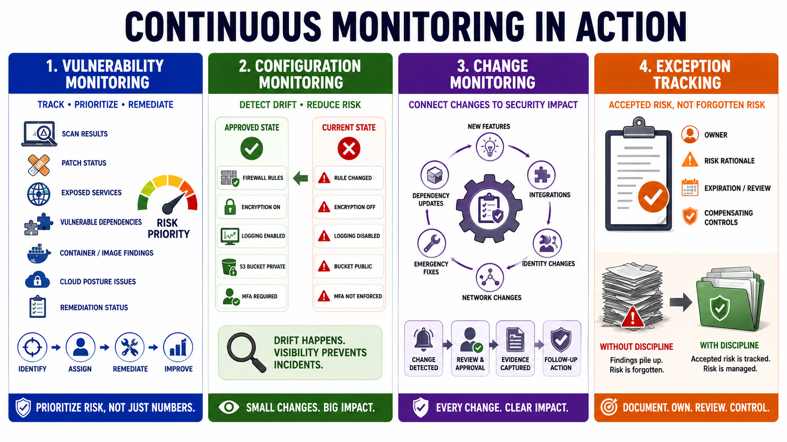

Vulnerability, Configuration, and Change Monitoring
Connecting to LMS... Progress: in progress

Narration
Vulnerability monitoring tracks weaknesses that could be exploited or that may weaken security posture. It includes scan results, patch status, exposed services, vulnerable dependencies, container or image findings, cloud posture issues, and remediation status. The point is not merely to count vulnerabilities. The point is to prioritize risk, assign ownership, track remediation, handle exceptions, and understand whether exposure is improving or worsening.
Configuration monitoring looks for drift from an approved or expected state. Drift can occur when a firewall rule changes, a storage bucket becomes exposed, logging is disabled, encryption settings change, a privileged role is assigned, an endpoint security setting is weakened, or infrastructure-as-code no longer matches the deployed environment. Configuration drift matters because many incidents begin with small changes that no one noticed.
Change monitoring connects operational changes to security impact. New features, new integrations, dependency updates, identity changes, network changes, emergency fixes, and administrative actions can all alter risk. A change may be legitimate and still require review. The monitoring program should help teams identify which changes are security-relevant, whether approvals occurred, whether evidence was captured, and whether follow-up action is needed.
Exception tracking is part of mature monitoring. Some findings cannot be fixed immediately, and some configurations may be intentionally different for a documented reason. Exceptions should have owners, risk rationale, expiration or review expectations, and compensating controls where appropriate. Without exception discipline, unresolved findings become background noise. With exception discipline, the organization can distinguish accepted risk from forgotten risk.